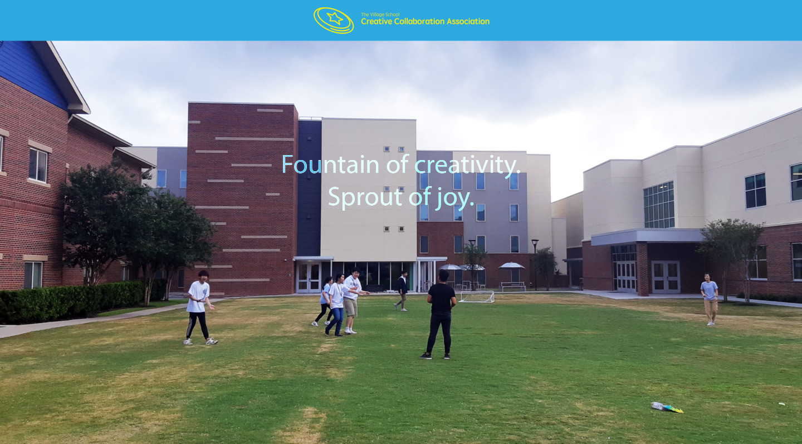

Creative Collaboration Association (CCA)

Creative Collaboration Association (CCA) is an officially recognized club of The Village School.
The purpose of CCA is for the members to get out of their "comfort zones" and socialize with various students from around the world.
In the club, we come up with new ideas for the whole club to play. Then, we share it, and we actually play it as a club!
We sometimes have community service trips to local organizations as team-bonding activities.
As the president (student leader) of the club, I made this website to introduce the club to students.

⚠️ This app is not optimized for mobile devices.
Skills Acquired
- Basics of front-end development with HTML and CSS
- (For the club: leadership, cooperation, volunteerism, etc.)
- Development: Sept. 2019
- Completed: September 2018
- Platform: Web (Desktop)
- Made with: HTML, CSS
- Formative project for Web Applications course (Grade received: 100/100)